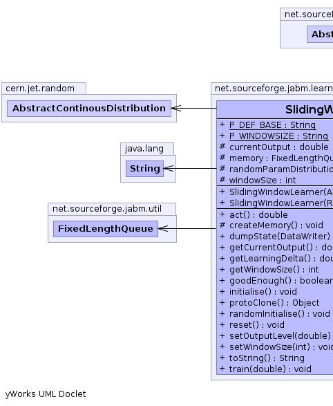
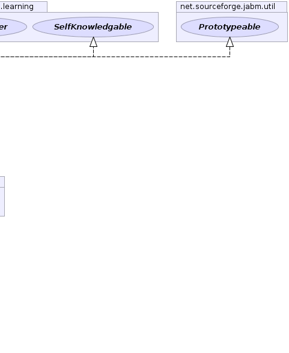

net.sourceforge.jabm.learning.AbstractLearner
net.sourceforge.jabm.learning.SlidingWindowLearner
net.sourceforge.jabm.learning.AbstractLearner
net.sourceforge.jabm.learning.SlidingWindowLearner
|
|||||||||
| PREV CLASS NEXT CLASS | FRAMES NO FRAMES | ||||||||
| SUMMARY: NESTED | FIELD | CONSTR | METHOD | DETAIL: FIELD | CONSTR | METHOD | ||||||||
java.lang.Object
public class SlidingWindowLearner
maintains a sliding window over the trained data series and use the average of data items falling into the window as the output learned.
|  |  |
 |
| Field Summary | |
|---|---|
protected double |
currentOutput
The current output level. |
protected FixedLengthQueue |
memory
|
static java.lang.String |
P_DEF_BASE
|
static java.lang.String |
P_WINDOWSIZE
|
protected cern.jet.random.AbstractContinousDistribution |
randomParamDistribution
|
protected int |
windowSize
A parameter used to adjust the size of the window |
| Fields inherited from class net.sourceforge.jabm.learning.AbstractLearner |
|---|
monitor |
| Constructor Summary | |
|---|---|
SlidingWindowLearner(cern.jet.random.AbstractContinousDistribution randomParamDistribution)
|
|
SlidingWindowLearner(cern.jet.random.engine.RandomEngine prng)
|
|
| Method Summary | |
|---|---|
double |
act()
Generate an output from the learning algorithm. |
protected void |
createMemory()
|
void |
dumpState(DataWriter out)
Write out our state data to the specified data writer. |
double |
getCurrentOutput()
|
double |
getLearningDelta()
Return a value indicative of the amount of learning that occured during the last iteration. |
int |
getWindowSize()
|
boolean |
goodEnough()
|
void |
initialise()
|
java.lang.Object |
protoClone()
|
void |
randomInitialise()
Initialise with random values for free parameters |
void |
reset()
|
void |
setOutputLevel(double currentOutput)
no effect on FixedLengthQueue-based next output! |
void |
setWindowSize(int windowSize)
|
java.lang.String |
toString()
|
void |
train(double target)
Provide a training signal to the learning algorithm. |
| Methods inherited from class net.sourceforge.jabm.learning.AbstractLearner |
|---|
monitor |
| Methods inherited from class java.lang.Object |
|---|
clone, equals, finalize, getClass, hashCode, notify, notifyAll, wait, wait, wait |
| Methods inherited from interface net.sourceforge.jabm.learning.Learner |
|---|
monitor |
| Field Detail |
|---|
protected cern.jet.random.AbstractContinousDistribution randomParamDistribution
protected int windowSize
public static final java.lang.String P_WINDOWSIZE
protected double currentOutput
public static final java.lang.String P_DEF_BASE
protected FixedLengthQueue memory
| Constructor Detail |
|---|
public SlidingWindowLearner(cern.jet.random.engine.RandomEngine prng)
public SlidingWindowLearner(cern.jet.random.AbstractContinousDistribution randomParamDistribution)
| Method Detail |
|---|
public void initialise()
public void reset()
public void randomInitialise()
MimicryLearner
randomInitialise in interface MimicryLearnerpublic void setWindowSize(int windowSize)
public int getWindowSize()
protected void createMemory()
public double act()
ContinuousLearner
act in interface ContinuousLearnerpublic void train(double target)
MimicryLearner
train in interface MimicryLearnerpublic void dumpState(DataWriter out)
Learner
dumpState in interface LearnerdumpState in class AbstractLearnerpublic double getCurrentOutput()
public void setOutputLevel(double currentOutput)
setOutputLevel in interface MimicryLearnerpublic double getLearningDelta()
Learner
getLearningDelta in interface LearnergetLearningDelta in class AbstractLearnerpublic java.lang.Object protoClone()
protoClone in interface Prototypeablepublic java.lang.String toString()
toString in class java.lang.Objectpublic boolean goodEnough()
goodEnough in interface SelfKnowledgable
|
|||||||||
| PREV CLASS NEXT CLASS | FRAMES NO FRAMES | ||||||||
| SUMMARY: NESTED | FIELD | CONSTR | METHOD | DETAIL: FIELD | CONSTR | METHOD | ||||||||